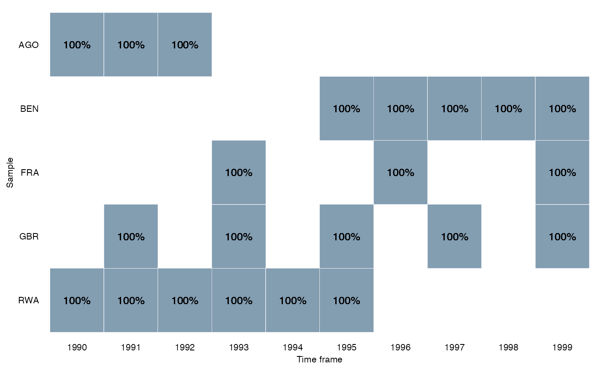

This function plots a heat map to visualize the coverage of the time-scope-units of the data. Options include total number of cases per time-scope-unit or relative number in percentage.
overview_heat( dat, id, time, perc = FALSE, exp_total, xaxis = "Time frame", yaxis = "Sample", col_low = "#dceaf2", col_high = "#2A5773", label = TRUE )
| dat | The data set |
|---|---|
| id | The scope (e.g., country codes or individual IDs). The axis is ordered in ascending order by default. |
| time | The time (e.g., time periods given by years, months, ...) |
| perc | If FALSE (default) plot returns the total number of observations per time-scope-unit. If TRUE, it returns the number of observations per time-scope-unit in percentage |
| exp_total | Expected total number of observations (i.e. maximum) for time unit. |
| xaxis | Label of your x axis ("Time frame" is default) |
| yaxis | Label of your y axis ("Sample" is default) |
| col_low | Hex color code for the lowest value (default is "#dceaf2") |
| col_high | Hex color code for the lowest value (default is "#2A5773") |
| label | If TRUE (default), the total number of observations/percentages of observations are displayed. If FALSE, it returns no labels. |
A ggplot figure that presents sample coverage visually
